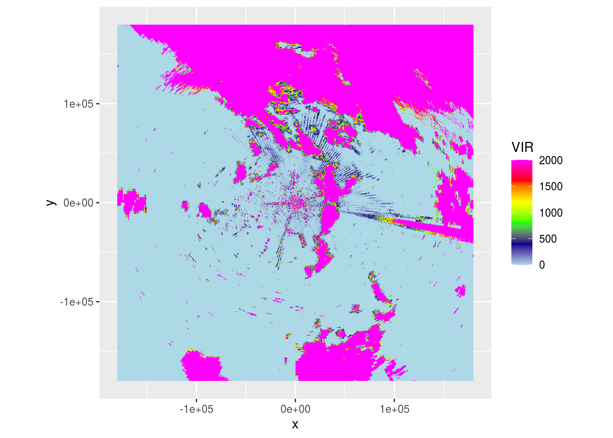
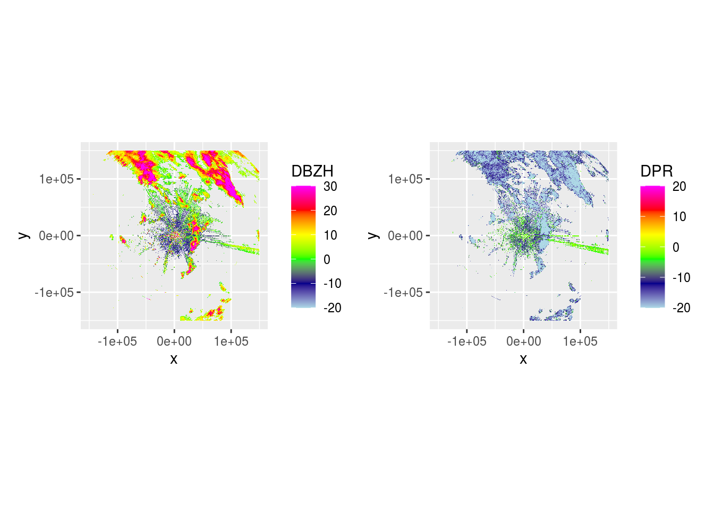
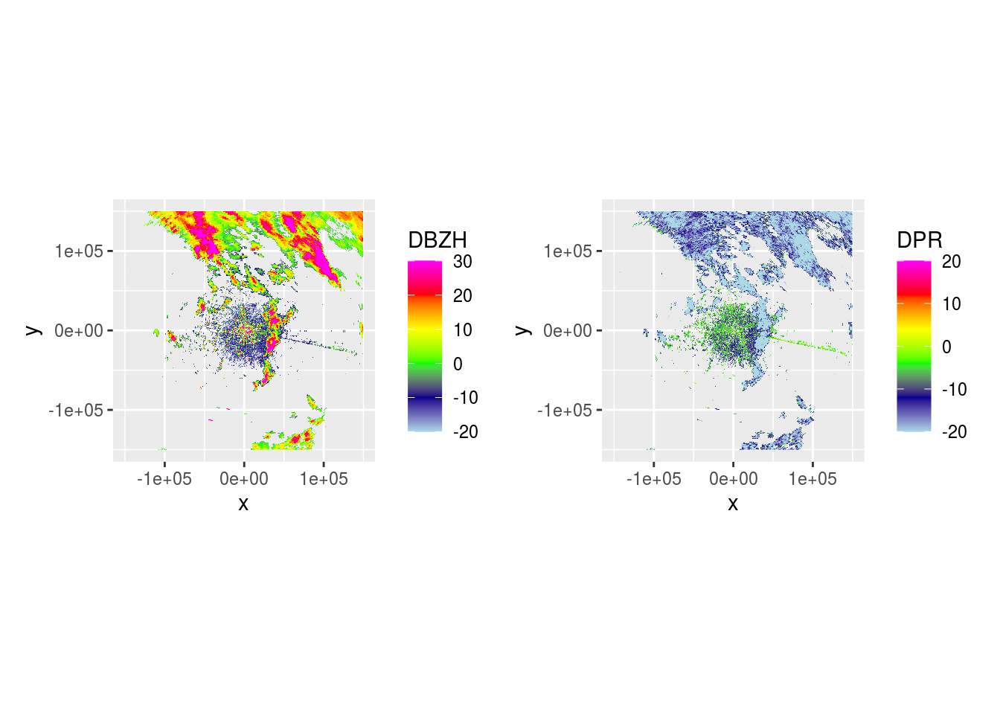
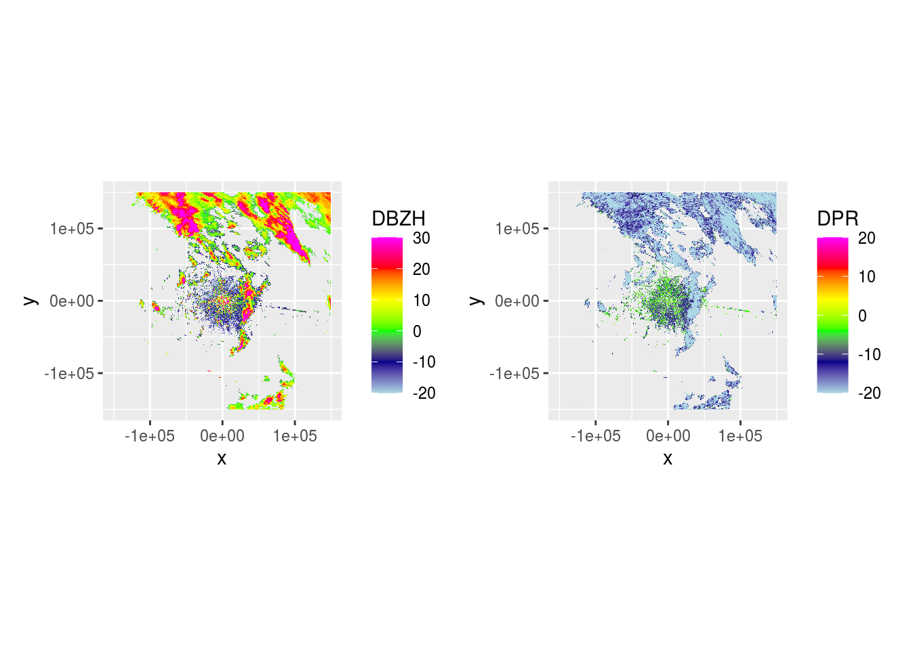
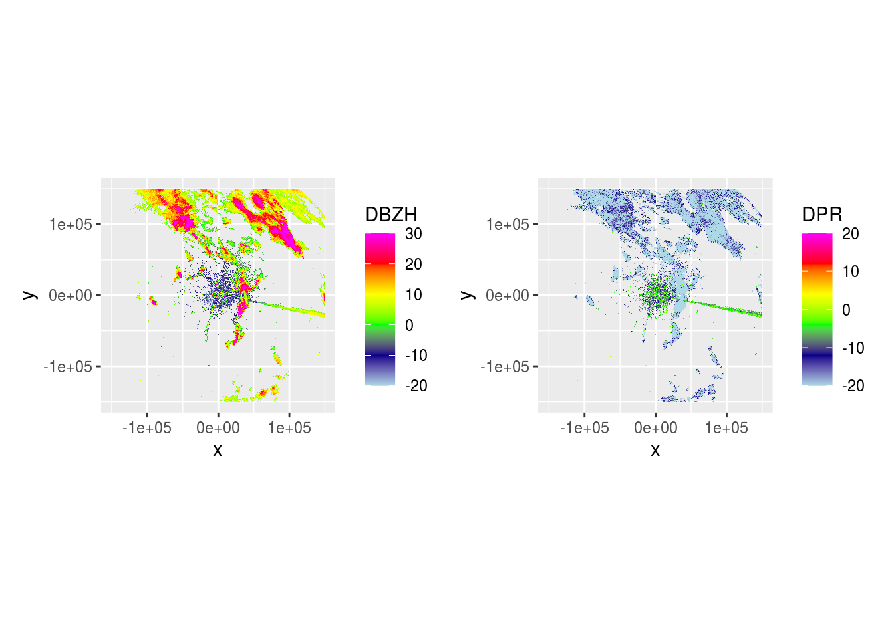
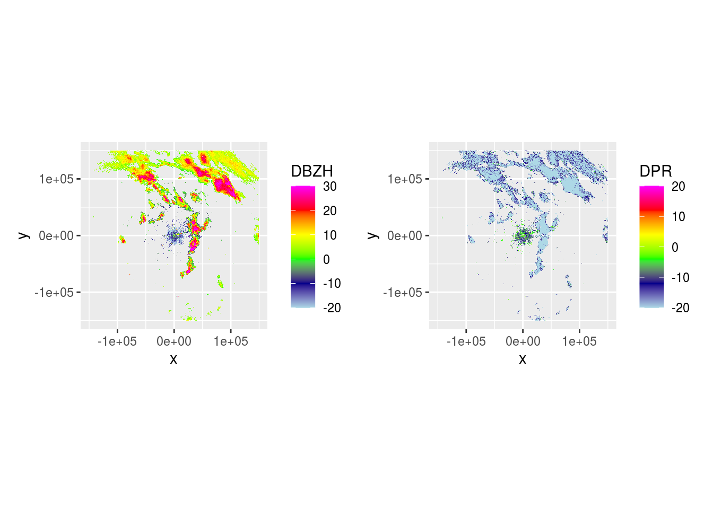
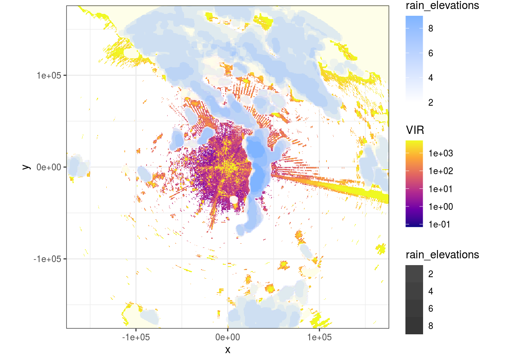

4 Rain visualisation
The previous approaches to segmentation have perhaps, unintentionally, resulted in a methodology to thoroughly clean RBC PPIs from rain, but this is not necessarily useful for visualisation. Now, instead, we’ll try an approach that simply focuses on visually distinguishing rain from other sources of reflectivity in the RBC PPIs.
Let’s plot a RBC PPI.
pvolfile <- "data/20201002/NLHRW_pvol_20201002T1205_6356.h5"
# pvolfile <- "data/20201001/NLHRW_pvol_20201001T2040_6356.h5"
pvolfile <- "data/20201001/NLHRW_pvol_20201001T1740_6356.h5"
pvol <- read_pvolfile(file = pvolfile, param = "all")
pvol <- calculate_param(pvol,
ZDRL = 10 ** ((DBZH - DBZV) /10),
DPR = 10 * log10((ZDRL + 1 - 2 * ZDRL^0.5 * RHOHV) / (ZDRL + 1 + 2 * ZDRL^ 0.5 * RHOHV)))
vp <- calculate_vp(pvolfile, verbose = FALSE)
ppi_rainy <- integrate_to_ppi(pvol, vp, xlim = c(-180000, 180000), ylim = c(-180000, 180000), res = 500, param = "DBZH")
plot(ppi_rainy)
And DBZH and DPR across 5 scans.
pvol$scans <- lapply(pvol$scans, function(x) {
x$params[["DBZH"]][is.na(x$params[["DPR"]])] <- NA
return(x)
})
lapply(pvol$scans[1:5], function(x) {
dbzh <- get_param(x, "DBZH")
dpr <- get_param(x, "DPR")
vradh <- get_param(x, "VRADH")
ppidbzh <- project_as_ppi(dbzh, grid_size = 500, range_max = 150000)
ppidpr <- project_as_ppi(dpr, grid_size = 500, range_max = 150000)
# ppivradh <- project_as_ppi(vradh, grid_size = 500, range_max = 150000)
plot(ppidbzh) + plot(ppidpr) # + plot(ppivradh)
})
## [[1]]
##
## [[2]]
##
## [[3]]
##
## [[4]]
##
## [[5]]Now we can use DPR to visualize where rain is.
masks <- lapply(pvol$scans[1:15], function(x) {
ppi <- project_as_ppi(get_param(x, "DPR"), grid_size = 500, range_max = 180000)
if (ppi$geo$elangle < 90) {
dpr <- as.cimg(as.matrix(ppi$data))
(dpr <= -12 & !is.na(dpr)) %>%
clean(4) %>% # Remove speckles by shrinking then growing using a 4px radius
fill(10) -> filled
if (sum(filled) > 0) {
filled %>%
split_connected() %>% # Split image in contiguous areas classified as rain
purrr::keep(~ sum(.) > 100) %>% # Only keep contiguous rain areas if area is > 100 pixels
parany() -> contiguous # Merge to 1 image again
}
if (exists("contiguous") && !is.null(contiguous)) { # Only buffer if any rain areas of > 50 pixels are retained
contiguous %>%
distance_transform(1, 2) %>% # Calculate Euclidean distance (2nd argument) to pixels classified as 1
threshold(5) -> dpr_mask
dpr_mask %>%
distance_transform(1, 2) -> dist_mask
dpr_mask <- -dpr_mask
m <- as.matrix(dpr_mask)
m[m == 0] <- 1
m[m == -1] <- NA
d <- as.matrix(dist_mask)
d[d == 0] <- NA
return(list(m, d))
} else {
o <- matrix(nrow = ppi$data@grid@cells.dim[1], ncol = ppi$data@grid@cells.dim[2])
return(list(o, o))
}
}
})
rain_elevations <- simplify2array(lapply(masks, function(x) x[[1]]))
rain_distances <- simplify2array(lapply(masks, function(x) x[[2]]))
rain_elevations <- apply(rain_elevations, c(1, 2), sum, na.rm = TRUE)
rain_elevations[rain_elevations <= 1] <- NA
rain_distances <- apply(rain_distances, c(1, 2), sum, na.rm = TRUE)
rain_distances[rain_distances == 0] <- NA
ppi_rainy$data$rain_distance <- as.vector(rain_distances)
ppi_rainy$data$rain_elevations <- as.vector(rain_elevations)And plot the visualization.
data <- do.call(function(y) ppi_rainy$data[y], list(c("VIR", "rain_elevations")))
data <- raster::as.data.frame(stack(data), xy = T)
bbox <- coord_fixed(xlim = c(-160000, 160000), ylim = c(-160000, 160000))
zlim = c(0, 5000)
index <- which(data[, 3] < zlim[1])
if (length(index) > 0) {
data[index, 3] <- zlim[1]
}
index <- which(data[, 3] > zlim[2])
if (length(index) > 0) {
data[index, 3] <- zlim[2]
}
ggplot(data = data) +
geom_raster(aes(x = x, y = y, fill = VIR)) +
scale_fill_viridis_c(trans = "log10", na.value = "transparent", option = "plasma") +
new_scale_fill() +
geom_raster(aes(x = x, y = y, fill = rain_elevations, alpha = rain_elevations)) +
# scale_fill_continuous(na.value = "transparent") +
scale_fill_gradient(na.value = "transparent", low = "white", high = "#7fb4ff") +
scale_alpha_continuous(range = c(0.9, 1)) +
theme_bw() +
bbox## Warning: Transformation introduced infinite values in discrete y-axis
source("R/comp_ppi.R")
hrw_ppis <- Sys.glob(file.path("data/processed/final-ppis", "*NL62*"))
dhl_ppis <- Sys.glob(file.path("data/processed/final-ppis", "*NL61*"))
generate_composites <- function(hrw_ppis, dhl_ppis, res, maxrange) {
# Make a new empty PPI to store all composites in
template_ppi <- readRDS(hrw_ppis[1])
all <- template_ppi$data@data %>%
filter(row_number() == 0)
basemap <- NULL
for (i in seq_along(hrw_ppis)) {
ppi_hrw <- readRDS(hrw_ppis[i])
ppi_dhl <- readRDS(dhl_ppis[i])
# Set all columns to NA if further than maxrange from radar
ppi_hrw$data@data[ppi_hrw$data@data$dist_radar > maxrange, ] <- NA
ppi_dhl$data@data[ppi_dhl$data@data$dist_radar > maxrange, ] <- NA
params <- c("VIR", "VID", "R", "overlap", "eta_sum", "eta_sum_expected", "dist_radar", "class",
"urban", "agricultural", "semiopen", "forests", "wetlands", "waterbodies", "dist_urban", "human_pop",
"wb_area_id", "wb_area_nr", "ptt_route", "wb_area_ha", "wb_total_biomass", "ptt_total_biomass", "total_biomass",
"wb_weighted_mean_weight", "ptt_weighted_mean_weight", "weighted_mean_weight")
# All mean methods except for factors and urban area (set to max), because we want to strictly filter out fireworks
methods <- c("mean", "mean", "mean", "mean", "mean", "mean", "min", "min",
"max", "mean", "mean", "mean", "mean", "mean", "mean", "mean",
"factor", "factor", "factor", "factor", "mean", "mean", "mean",
"mean", "mean", "mean")
cppi <- comp_ppi(list(ppi_hrw, ppi_dhl), param = params, method = methods, res = c(res, res), coverage = "count")
# Set rain and background pixels to NA
cppi$data$VIR[cppi$data$class < 2] <- NA
# Add coordinates
coords_cppi <- raster::coordinates(cppi$data)
cppi$data$x <- coords_cppi[, 1]
cppi$data$y <- coords_cppi[, 2]
# Add pixel ID
cppi$data@data %>%
mutate(pixel = row_number()) -> cppi$data@data
# Solve different factors
solve_factors <- function(x) {
r <- x[1]
if (is.na(x[1]) && is.na(x[2])) { r <- NA }
if (is.na(x[1]) && !is.na(x[2])) { r <- x[2] }
if (!is.na(x[1]) && is.na(x[2])) { r <- x[1] }
if (!is.na(x[1]) && !is.na(x[2])) {
if (x[1] != x[2]) {
r <- NA
} else {
r <- x[1]
}
}
r
}
for (j in which(methods == "factor")) {
cppi$data@data[params[j]] <- apply(cppi$data@data[params[j]], 1, solve_factors)
}
saveRDS(cppi, file = paste("data/processed/composite-ppis/", res, "m/", strftime(ppi_hrw$datetime, format = "%Y%m%d%H%M"), ".RDS", sep = ""))
cppi$data@data %>%
mutate(datetime = as.POSIXct(ppi_hrw$datetime)) %>%
bind_rows(all) -> all
if (i == 1) {
basemap <- download_basemap(cppi, alpha = 0.3)
}
cppi$data$VIR <- log10(cppi$data$VIR)
cppi$data$VIR[is.na(cppi$data$VIR)] <- 0
bioRad::map(cppi, map = basemap, radar_size = 1, xlim = c(3.1, 6.8), ylim = c(51, 54), zlim = c(0, 4.5),
palette = viridis(256, option = "viridis", alpha = 0.6)) +
labs(title = "Fireworks NYE 2017-2018",
subtitle = paste(ppi_hrw$datetime, ' UTC', sep = ""))
ggsave(paste("data/plots/vir-ppis/", res, "m/", strftime(ppi_hrw$datetime, format = "%Y%m%d%H%M"), ".png", sep = ""))
}
saveRDS(all, file = paste("data/processed/all_", res, "m.RDS", sep = ""))
}
# Somehow this often hangs despite ample memory available, in which case better executed serially.
# r <- parallel::mclapply(c(500, 1000, 2000), function(x) { generate_composites(hrw_ppis, dhl_ppis, res = x, maxrange = 66000)},
# mc.cores = 3, mc.preschedule = FALSE)
r <- parallel::mclapply(c(1000, 2000), function(x) { generate_composites(hrw_ppis, dhl_ppis, res = x, maxrange = 66000)},
mc.cores = 3, mc.preschedule = FALSE)